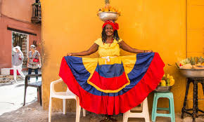
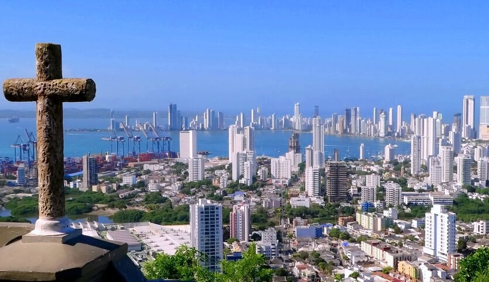

Народности
Численность населения — 49,65млн (перепись населения 2018 года).
Годовой прирост — 1,5 %.
Уровень рождаемости — 14,7 на 1000 человек.
Смертность — 5,63 на 1000 человек.
Заражённость вирусом иммунодефицита (ВИЧ) — 5 % (оценка 2007 года).
Этно-расовый состав: Испанские колонизаторы вступали в браки с коренными жителями (индейцами), и сейчас их потомки, метисы, составляют 58 % всего населения Колумбии. Кроме них страну населяют также представители европеоидной расы — 20 %, мулаты (потомки негров и европейцев) — 14 %, негры — 4 %, потомки смешанных браков индейцев и негров — 3 %

Факты
Колумбия-государство на северо-западе Южной Америки, с территориями в Центральной Америке. Столица — Богота. Граничит с Бразилией и Венесуэлой на востоке, на юге — с Эквадором и Перу, на западе — с Панамой
Климат
На большей части территории Колумбии преобладает субэкваториальный климат, на Тихоокеанском побережье и в восточных районах - экваториальный, на узкой полосе Карибского побережья - влажный тропический, а в горах климат зависит от высоты местности.